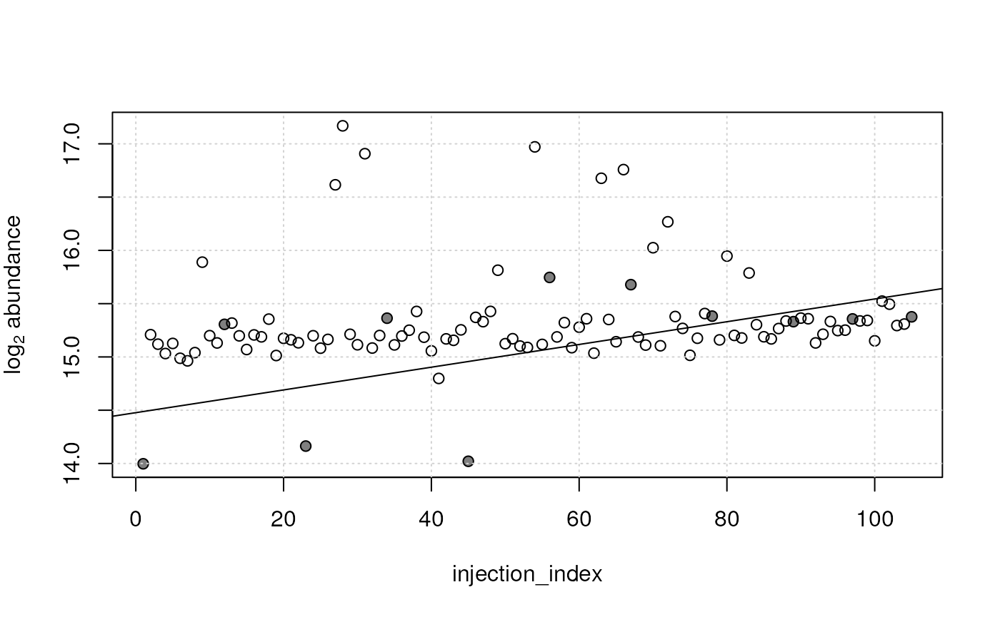

Package: MetaboCoreUtils
Authors: Johannes Rainer [aut, cre] (https://orcid.org/0000-0002-6977-7147), Michael Witting
[aut] (https://orcid.org/0000-0002-1462-4426), Andrea Vicini
[aut], Liesa Salzer [ctb] (https://orcid.org/0000-0003-0761-0656), Sebastian Gibb
[aut] (https://orcid.org/0000-0001-7406-4443), Michael Stravs
[ctb] (https://orcid.org/0000-0002-1426-8572), Roger Gine [aut]
(https://orcid.org/0000-0003-0288-9619), Philippine
Louail [aut] (https://orcid.org/0009-0007-5429-6846)
Last modified: 2024-09-27 15:08:19.611284
Compiled: Fri Sep 27 15:12:42 2024
Introduction
The MetaboCoreUtils package defines metabolomics-related core functionality provided as low-level functions to allow a data structure-independent usage across various R packages (Rainer et al. 2022). This includes functions to calculate between ion (adduct) and compound mass-to-charge ratios and masses or functions to work with chemical formulas. The package provides also a set of adduct definitions and information on some commercially available internal standard mixes commonly used in MS experiments.
For a full list of function, see
library("MetaboCoreUtils")
ls(pos = "package:MetaboCoreUtils")## [1] "addElements" "adductFormula"
## [3] "adductNames" "adducts"
## [5] "adjust_lm" "calculateKm"
## [7] "calculateKmd" "calculateMass"
## [9] "calculateRkmd" "containsElements"
## [11] "convertMtime" "correctRindex"
## [13] "countElements" "fit_lm"
## [15] "formula2mz" "indexRtime"
## [17] "internalStandardMixNames" "internalStandards"
## [19] "isotopicSubstitutionMatrix" "isotopologues"
## [21] "isRkmd" "mass2mz"
## [23] "mclosest" "multiplyElements"
## [25] "mz2mass" "pasteElements"
## [27] "percentMissing" "rowBlank"
## [29] "rowDratio" "rowPercentMissing"
## [31] "rowRsd" "rsd"
## [33] "standardizeFormula" "subtractElements"or the reference page on the package webpage.
Installation
The package can be installed with the BiocManager
package. To install BiocManager use
install.packages("BiocManager") and, after that,
BiocManager::install("MetaboCoreUtils") to install this
package.
Examples
The functions defined in this package utilise basic classes with the aim of being reused in packages that provide a more formal, high-level interface.
The examples below demonstrate the basic usage of the functions from the package.
Conversion between ion m/z and compound masses
The mass2mz() and mz2mass() functions allow
to convert between compound masses and ion (adduct) mass-to-charge
ratios (m/z). The MetaboCoreUtils package provides definitions
of common ion adducts generated by electrospray ionization (ESI). These
can be listed with the adductNames() function.
## [1] "[M+3H]3+" "[M+2H+Na]3+" "[M+H+Na2]3+"
## [4] "[M+Na3]3+" "[M+2H]2+" "[M+H+NH4]2+"
## [7] "[M+H+K]2+" "[M+H+Na]2+" "[M+C2H3N+2H]2+"
## [10] "[M+2Na]2+" "[M+C4H6N2+2H]2+" "[M+C6H9N3+2H]2+"
## [13] "[M+H]+" "[M+Li]+" "[M+2Li-H]+"
## [16] "[M+NH4]+" "[M+H2O+H]+" "[M+Na]+"
## [19] "[M+CH4O+H]+" "[M+K]+" "[M+C2H3N+H]+"
## [22] "[M+2Na-H]+" "[M+C3H8O+H]+" "[M+C2H3N+Na]+"
## [25] "[M+2K-H]+" "[M+C2H6OS+H]+" "[M+C4H6N2+H]+"
## [28] "[2M+H]+" "[2M+NH4]+" "[2M+Na]+"
## [31] "[2M+K]+" "[2M+C2H3N+H]+" "[2M+C2H3N+Na]+"
## [34] "[3M+H]+" "[M+H-NH3]+" "[M+H-H2O]+"
## [37] "[M+H-Hexose-H2O]+" "[M+H-H4O2]+" "[M+H-CH2O2]+"
## [40] "[M]+"With that we can use the mass2mz() function to calculate
the m/z for a set of compounds assuming the generation of certain ions.
In the example below we define masses for some theoretical compounds and
calculate their expected m/z assuming that ions "[M+H]+"
and "[M+Na]+" are generated.
## [M+H]+ [M+Na]+
## [1,] 124.0073 145.9892
## [2,] 843.0073 864.9892
## [3,] 325.0073 346.9892As a result we get a matrix with each row representing
one compound and each column the m/z for one of the defined adducts.
With the mz2mass() function we could perform the reverse
calculation, i.e. from m/z to compound masses.
In addition, it is possible to calculate m/z values from chemical
formulas with the formula2mz() function. Below we calculate
the m/z values for [M+H]+ and [M+Na]+ adducts
from the chemical formulas of glucose and caffeine.
formula2mz(c("C6H12O6", "C8H10N4O2"), adduct = c("[M+H]+", "[M+Na]+"))## [M+H]+ [M+Na]+
## C6H12O6 181.0707 203.0526
## C8H10N4O2 195.0877 217.0696Working with chemical formulas
The lack of consistency in the format in which chemical formulas are
written poses a big problem comparing formulas coming from different
resources. The MetaboCoreUtils package provides functions to
standardize formulas as well as combine formulas or substract
elements from formulas. Below we use an artificial example to show this
functionality. First we standardize a chemical formula with the
standardizeFormula() function.
frml <- "Na3C4"
frml <- standardizeFormula(frml)
frml## Na3C4
## "C4Na3"Next we add "H2O" to the formula using the
addElements() function.
frml <- addElements(frml, "H2O")
frml## [1] "C4H2ONa3"We can also substract elements with the
subtractElements() function:
frml <- subtractElements(frml, "H")
frml## [1] "C4HONa3"Chemical formulas could also be multiplied with a scalar using the
multiplyElements() function. The counts for individual
elements in a chemical formula can be calculated with the
countElements() function.
countElements(frml)## $C4HONa3
## C H O Na
## 4 1 1 3The function adductFormula() allows in addition to
create chemical formulas of specific adducts of compounds. Below we
create chemical formulas for [M+H]+ and
[M+Na]+ adducts for glucose and caffeine.
adductFormula(c("C6H12O6", "C8H10N4O2"), adduct = c("[M+H]+", "[M+Na]+"))## [M+H]+ [M+Na]+
## C6H12O6 "[C6H13O6]+" "[C6H12O6Na]+"
## C8H10N4O2 "[C8H11N4O2]+" "[C8H10N4O2Na]+"Finally, calculateMass() can be used to calculate the
(exact) mass for a given chemical formula. This function supports also
the definition of isotopes in the formula. As an example we calculate
below the mass of two chemical formulas, one without isotopes and one
with 3 of the carbon atoms replaced by the carbon 13 isotope.
calculateMass(c("C6H12O6", "[13C3]C3H12O6"))## C6H12O6 [13C3]C3H12O6
## 180.0634 183.0735Note that isotopes are supported for all elements (deuterium could
for example be expressed as "[2H]").
Kendrick mass defect calculation
Lipids and other homologous series based on fatty acyls can be found in data by using Kendrick mass defects (KMD) or referenced kendrick mass defects (RKMD). The MetaboCoreUtils package provides functions to calculate everything around Kendrick mass defects. The following example calculates the KMD and RKMD for three lipids (PC(16:0/18:1(9Z)), PC(16:0/18:0), PS(16:0/18:1(9Z))) and checks, if they fit the RKMD of PCs detected as [M+H]+ adducts.
lipid_masses <- c(760.5851, 762.6007, 762.5280)
calculateKmd(lipid_masses)## [1] 0.7358239 0.7491732 0.6765544Next the RKMD is calculated and checked if it fits to a specific range. RKMDs are either 0 or negative integers according to the number of double bonds in the lipids, e.g. -2 if two double bonds are present in the lipids.
lipid_rkmd <- calculateRkmd(lipid_masses)
isRkmd(lipid_rkmd)## [1] TRUE TRUE FALSERetention time indexing
Retention times are often not directly comparable between two LC-MS systems, even if nominally the same separation method is used. Conversion of retention times to retetion indices can overcome this issue. The MetaboCoreUtils package provides a function to perform this conversion. Below we use an example based on indexing with a homologoues series af N-Alkyl-pyridinium sulfonates (NAPS).
rti <- read.table(system.file("retentionIndex",
"rti.txt",
package = "MetaboCoreUtils"),
header = TRUE,
sep = "\t")
rtime <- read.table(system.file("retentionIndex",
"metabolites.txt",
package = "MetaboCoreUtils"),
header = TRUE,
sep = "\t")A data.frame with the retetion times of the NAPS and
their respective index value is required.
head(rti)## rtime rindex
## 1 1.14 100
## 2 1.18 200
## 3 1.38 300
## 4 2.11 400
## 5 4.34 500
## 6 5.92 600The indexing is peformed using the function
indexRtime().
rtime$rindex_r <- indexRtime(rtime$rtime, rti)For comparison the manual calculated retention indices are included.
head(rtime)## name rtime rindex_manual rindex_r
## 1 VITAMIN D2 NA NA NA
## 2 SQUALENE 15.66 1709.8765 1709.8765
## 3 4-COUMARATE 6.26 629.3103 629.3103
## 4 NONANOATE 11.73 1244.5783 1244.5783
## 5 ESTRADIOL-17ALPHA 10.27 1065.4321 1065.4321
## 6 CAPRYLATE 10.67 1114.8148 1114.8148Conditions that shall be compared by the retention index might not
perfectly match. In case the deviation is linear a simple two-point
correction can be applied to the data. This is performed by the function
correctRindex(). The correction requires two reference
standards and their measured RIs and reference RIs.
ref <- data.frame(rindex = c(1709.8765, 553.7975),
refindex = c(1700, 550))
rtime$rindex_cor <- correctRindex(rtime$rindex_r, ref)Linear model-based adjustment of LC-MS feature abundances
Feature abundances from untargeted LC-MS-based metabolomics
experiments can be affected by technical noise or signal drifts. In
particular, some of these technical variances can be specific for
individual metabolites, requiring hence a per-feature adjustment of the
abundances. One example of such noise is an injection order dependent
signal drift that can sometimes be observed in untargeted metabolomics
data from LC-MS experiments. The fit_lm() function can be
used to model such drifts in the observed data of each single feature,
for example with a model of the form y ~ injection_index
that models the relationship between the measured abundances of a
metabolite y on the index in which the respective sample
was injected (injection_index). Subsequently, the data can
be adjusted for the modeled drift with the adjust_lm()
function. This approach is similar to the one described by (Wehrens et al. 2016).
Below we perform such an injection order dependent signal adjustment on a small test data set representing abundances of LC-MS features from an untargeted metabolomics experiment. All samples were measured within the same measurement run and QC samples were measured repeatedly after 8 study samples.
vals <- read.table(system.file("txt", "feature_values.txt",
package = "MetaboCoreUtils"), sep = "\t")
vals <- as.matrix(vals)
head(vals)## POOL_01 study_01 study_02 study_03 study_04 study_05 study_06
## FT0040 NA 33421.8749 NA 34888.9370 14482.848 34693.7447 13830.2906
## FT0094 3318.389 1752.9716 2971.4475 1802.9617 2714.101 NA 1651.2575
## FT0291 1964.315 2914.6981 2368.9870 2152.2494 2309.761 3399.3081 2629.2645
## FT0312 4577.200 4576.6186 2839.5201 3034.1878 2683.836 4391.6857 2989.9640
## FT0319 1517.397 2802.2043 1472.8231 1456.2739 1560.336 2363.6854 1255.3216
## FT0339 NA 591.5768 562.4941 637.7392 NA 722.7031 614.6914
## study_07 study_08 study_09 study_10 POOL_02 study_11
## FT0040 42099.1184 NA 62721.7802 11716.2416 16558.1926 37534.9453
## FT0094 1471.7595 7193.307 1885.1614 2559.1546 2548.5665 2517.1615
## FT0291 2310.2777 NA 2923.0293 2564.9679 2141.5598 2428.5513
## FT0312 3594.0882 2479.273 3016.0911 2764.7268 3489.7400 3868.2540
## FT0319 986.9245 NA 1874.5481 1027.9120 1604.5124 785.6436
## FT0339 514.4863 NA 691.1081 669.4697 609.0221 NA
## study_12 study_13 study_14 study_15 study_16 study_17 study_18
## FT0040 47129.9469 37549.363 42738.436 40987.3042 76164.279 NA 66415.0158
## FT0094 1792.8034 2143.162 1968.257 2229.7991 2948.312 2043.6598 2138.3743
## FT0291 2220.7451 2583.182 NA 2748.1731 3551.301 2305.9652 2090.3821
## FT0312 3233.1222 5458.136 3057.953 2641.6739 1365.517 2652.3533 2564.1248
## FT0319 1260.4340 1881.102 919.180 1543.7853 NA 1630.3486 784.4748
## FT0339 495.7719 NA NA 637.3097 1198.408 679.8128 657.2353
## study_19 study_20 POOL_03 study_21 study_22 study_23 study_24
## FT0040 64852.952 42975.8912 15782.767 111441.4151 44396.862 9898.4582 NA
## FT0094 1819.282 2149.3079 2898.980 1408.7862 2140.328 2123.7659 5972.890
## FT0291 NA 2502.2464 2076.463 4070.0369 2727.386 2231.3063 NA
## FT0312 4195.946 5029.4841 4386.052 2888.4274 3216.775 3629.9067 5749.252
## FT0319 1202.754 1932.3339 1488.995 2273.0881 1394.703 1057.6662 1225.244
## FT0339 NA 598.6028 644.402 890.8353 NA 580.1335 NA
## study_25 study_26 study_27 study_28 study_29 study_30 POOL_04
## FT0040 NA 32609.0777 44176.8270 NA 29815.3433 17542.958 NA
## FT0094 5963.154 1558.3835 1881.3461 8169.489 714.4880 NA 2354.397
## FT0291 NA 2259.1059 3057.0478 NA 2925.3559 2971.364 1926.468
## FT0312 8500.468 1978.6276 1534.6658 8217.338 3978.7115 3150.521 4924.327
## FT0319 NA 770.5572 1412.9109 NA 1375.1655 1626.885 1493.527
## FT0339 NA 577.8615 732.5314 NA 627.1692 676.699 586.689
## study_31 study_32 study_33 study_34 study_35 study_36
## FT0040 NA 9303.2550 57262.4310 12229.3152 21840.4434 35967.1447
## FT0094 2253.2225 1118.9082 2277.9351 1983.8818 2086.2680 1795.8683
## FT0291 1824.1714 2470.9075 2180.8980 3191.5980 2784.4740 2723.8941
## FT0312 3137.0267 2986.9033 1949.2864 2853.1837 2494.5363 2921.9569
## FT0319 1216.7942 706.5504 955.0879 1207.1138 1902.6631 1397.5654
## FT0339 525.1465 584.8484 NA 559.4653 501.5349 574.9044
## study_37 study_38 study_39 study_40 POOL_05 study_41
## FT0040 16550.220 69832.6339 14726.1963 27431.2148 24325.411 59191.9549
## FT0094 3032.945 1053.1620 2186.6016 1358.9347 2890.318 1586.9084
## FT0291 2248.440 2741.2333 2644.3897 2460.0206 1911.649 3519.4588
## FT0312 1523.665 4496.9107 2567.5767 2803.0060 4597.090 4545.5802
## FT0319 NA 1195.1294 1184.8338 1068.1333 1621.064 1794.4214
## FT0339 NA 664.9422 729.5731 740.2341 NA 828.5343
## study_42 study_43 study_44 study_45 study_46 study_47
## FT0040 27913.0568 49294.9953 19090.101 15281.1149 33492.704 24328.1191
## FT0094 NA 1927.3145 3882.824 1195.0421 2496.047 1303.3380
## FT0291 1937.5389 4001.5733 4013.018 3114.2550 2186.218 3121.4275
## FT0312 3792.3431 3853.6429 3503.540 3558.3291 3818.942 3913.8612
## FT0319 665.2814 2407.1731 2560.211 940.6862 1483.900 1426.9040
## FT0339 573.7103 932.0891 1069.446 629.6415 NA 608.8032
## study_48 study_49 study_50 POOL_06 study_51 study_52
## FT0040 NA NA 30400.1311 22651.9582 28651.1589 26356.0212
## FT0094 1967.6163 5202.328 1890.0850 2401.7994 1880.4819 1727.9309
## FT0291 2390.5679 NA 3202.3235 2101.6028 2593.9382 2834.0614
## FT0312 4532.2282 9704.224 2493.3784 3545.2516 3223.0982 7181.0782
## FT0319 1885.6900 1724.252 1309.7133 1533.3747 2053.0178 1554.5474
## FT0339 634.8694 NA 709.7217 661.4703 513.1259 478.1243
## study_53 study_54 study_55 study_56 study_57 study_58
## FT0040 10456.1420 36240.842 23546.5286 26260.1408 NA 26022.6292
## FT0094 1637.6124 1703.262 1831.3715 651.3137 4999.264 1790.9265
## FT0291 3456.7103 2909.209 2858.8937 2490.4221 NA 3223.3600
## FT0312 3037.9072 4367.416 2733.0167 3148.7019 7052.950 5177.9266
## FT0319 1710.0488 2214.488 1261.6172 1358.2602 NA 2460.3422
## FT0339 725.9346 NA 711.0999 604.9715 NA 758.5105
## study_59 study_60 POOL_07 study_61 study_62 study_63 study_64
## FT0040 67289.3789 NA 8072.505 31619.7595 16027.3709 51822.3466 18790.6518
## FT0094 1267.2578 5540.048 2037.228 795.1432 1886.8641 1377.9130 2016.0004
## FT0291 2821.2006 NA 1971.419 2930.1502 2856.4932 3040.2141 2139.8260
## FT0312 4377.6509 3372.552 5884.745 3508.9896 4802.3997 2500.0334 2920.7262
## FT0319 1972.7426 NA 1482.501 1776.7047 1872.9448 1374.1580 1362.5122
## FT0339 717.7913 NA NA 748.4201 650.5845 908.1775 638.0796
## study_65 study_66 study_67 study_68 study_69 study_70
## FT0040 NA 36613.7317 76360.7440 15979.6071 19244.0489 56263.6600
## FT0094 3065.384 1866.1872 1057.9295 1551.0503 1167.0373 1921.6288
## FT0291 NA 2639.7663 2794.3347 2559.4344 2656.7542 NA
## FT0312 3966.601 2401.4650 3271.3162 4071.4323 3418.1176 3361.1508
## FT0319 1249.530 1583.8277 1318.9805 1484.2703 1073.4185 1404.2646
## FT0339 NA 615.5771 613.7087 689.1856 644.0605 801.4608
## POOL_08 study_71 study_72 study_73 study_74 study_75 study_76
## FT0040 26189.144 82620.0510 53903.827 30790.6283 58052.0021 14858.280 93242.782
## FT0094 1855.005 1773.5056 2383.863 993.9147 1536.1126 3743.294 1594.888
## FT0291 2019.198 2843.8269 4308.339 2561.4050 3325.8861 3835.169 3144.408
## FT0312 4400.496 3343.0720 5821.110 3942.4958 2690.6603 4941.808 3165.302
## FT0319 1445.116 1710.7587 3984.479 1544.9007 2521.3296 2928.769 1874.990
## FT0339 NA 766.7796 1242.263 743.4456 786.7057 1106.543 762.748
## study_77 study_78 study_79 study_80 POOL_09 study_81
## FT0040 32813.0484 41469.0471 31438.9755 51246.7054 16197.4787 23592.8419
## FT0094 807.1626 1179.5614 1340.5517 NA 2181.5091 2313.0852
## FT0291 2936.3027 2111.4602 2347.6592 4509.4846 1940.6213 2546.6638
## FT0312 2730.6546 3737.2820 2997.2542 2978.5494 4381.6347 3590.1376
## FT0319 1458.1911 1823.3412 1812.4952 1254.5991 1559.7199 1610.4226
## FT0339 765.5338 666.8978 572.0936 944.1905 586.2496 652.3124
## study_82 study_83 study_84 study_85 study_86 study_87
## FT0040 80101.1475 37119.475 22263.1847 27033.2602 30109.8050 NA
## FT0094 1081.0726 1758.792 895.3124 NA 2453.3466 831.2306
## FT0291 3409.8485 2908.354 3161.5198 3457.9679 1970.5368 3154.1650
## FT0312 3199.2731 5584.014 2785.2191 3473.2288 2533.0203 3732.9573
## FT0319 2500.6798 1922.035 1838.9530 1263.1056 926.6014 2657.7605
## FT0339 740.3379 NA 670.8597 608.9832 837.1074 725.9649
## POOL_10 study_88 study_89 study_90 study_91 study_92
## FT0040 23962.084 61837.2091 32377.1730 32439.4524 24012.0652 39597.0892
## FT0094 2204.750 1331.7937 1668.8801 1410.0527 1925.2850 1540.6500
## FT0291 1902.566 2905.3271 3187.0283 2533.9604 3063.0096 2558.1285
## FT0312 5496.504 4381.3988 2466.6801 3536.2193 3228.3657 2342.0506
## FT0319 1516.650 1443.5203 1853.9952 1811.4278 1717.6488 2294.2605
## FT0339 NA 683.7459 772.8748 573.6352 782.7831 661.8547
## study_93 study_94 POOL_11
## FT0040 79366.9568 38650.393 16487.0867
## FT0094 1695.5372 1804.578 2300.9370
## FT0291 3381.0408 2353.378 1751.7661
## FT0312 2036.8603 4016.502 3249.0962
## FT0319 1196.5777 1770.076 1473.6806
## FT0339 926.6332 NA 597.9774The samples are provided in the columns of the matrix
vals, in the order in which they were measured. We next
define a data.frame with the injection index of the
individual samples and identify the columns containing the QC
samples.
#' Define a data frame with the injection index
sdata <- data.frame(injection_index = seq_len(ncol(vals)))
#' Identify columns representing QC samples
qc_index <- grep("^POOL", colnames(vals))
length(qc_index)## [1] 11We can next model an injection order dependent signal drift for each
feature (row) in the data. To ensure independence of the fitted
regression models on any experimental covariate we estimate the drift on
values observed for QC samples (which represent repeated injections of
the same sample pool and hence any differences observed in these are
supposed to be of only technical nature). Also, we fit the model on log2
transformed abundances assuming hence a log linear relationship between
abundances and injection index. By setting minVals = 9 we
require at least 9 non-missing values in QC samples (n = 11) of each row
for the model to be fitted - for fewer values, model fitting is skipped
and an NA is returned for the particular feature (row). The
default for the minVals parameter is to fit models only for
features with at least 75% of non-missing values. For lower values of
minVals model fitting can become unstable and users should
thus evaluate (and visually inspect) the estimated signal drifts.
#' Fit linear models explaining observed abundances by injection index.
#' Linear models are fitted row-wise to data of QC samples.
qc_lm <- fit_lm(y ~ injection_index,
data = sdata[qc_index, , drop = FALSE],
y = log2(vals[, qc_index]),
minVals = 9)The function returned a list of linear models. Each
model describing the observed relationship between feature abundances
and injection index of the samples. Below we extract the first of these
models.
qc_lm[[1]]##
## Call:
## lm(formula = formula, data = data, model = model)
##
## Coefficients:
## (Intercept) injection_index
## 14.043284 0.001409The coefficient for the injection index represents the dependency of the measured abundances (in QC samples) for that feature on the index in which the samples were injected, with positive coefficients indicating increasing abundances with injection index and negative coefficients decreasing intensities. The magnitude of the value represents the strength of this association.
For some features no model was fitted, because too few non-missing
data points were available (parameter minVals above).
## [1] 18We can also plot the data and indicate the fitted model.
plot(x = sdata$injection_index, y = log2(vals[1, ]),
xlab = "injection_index", ylab = expression(log[2]~abundance))
#' Indicate QC samples
points(x = sdata$injection_index[qc_index],
y = log2(vals[1, qc_index]), pch = 16, col = "#00000080")
grid()
abline(qc_lm[[1]])Abundance of an example feature along injection index. Open circles represent measurements in study samples, filled circles in QC samples. The black solid line represents the estimated signal drift.
For that feature a very slight increase of abundances over the measurement run was estimated. In contrast, for the second feature a stronger, but decreasing, signal drift was estimated on the QC samples (see below). Also the study samples seem to follow this drift.
plot(x = sdata$injection_index, y = log2(vals[2, ]),
xlab = "injection_index", ylab = expression(log[2]~abundance))
#' Indicate QC samples
points(x = sdata$injection_index[qc_index],
y = log2(vals[2, qc_index]), pch = 16, col = "#00000080")
grid()
abline(qc_lm[[2]])Abundance of an example feature along injection index. Open circles represent measurements in study samples, filled circles in QC samples. The black solid line represents the estimated signal drift.
Thus, generally, for LC-MS data, not all features need be affected by the same injection order-dependent signal drift. We next extract the coefficient (or slope, representing the magnitude of the association with the injection order), its p-value (providing the significance from the hypothesis test that the coefficient is different from 0) and the (adjusted) R squared (variance explained by the fitted model) for each feature.
#' Extract slope, F-statistic and R squared from each model, skipping
#' features for which no model was fitted.
qc_lm_summary <- lapply(qc_lm, function(z) {
if (length(z) > 1) {
s <- summary(z)
c(slope = coefficients(s)[2, "Estimate"],
p.value = coefficients(s)[2, 4],
adj.r.squared = s$adj.r.squared)
} else c(slope = NA_real_, F = NA_real_,
adj.r.squared = NA_real_) # returning NA for skipped models
}) |> do.call(what = rbind)
head(qc_lm_summary)## slope p.value adj.r.squared
## [1,] 0.0014086822 0.823300855 -0.134149225
## [2,] -0.0051564665 0.009186877 0.497723379
## [3,] -0.0013415890 0.057567953 0.271883394
## [4,] 0.0002856518 0.912327619 -0.109530299
## [5,] -0.0004721848 0.331239768 0.005438684
## [6,] NA NA NAWe below plot the slope (x-axis) against its p-value for the fitted models. For the p-values we plot the negative logarithm so that larger values represent smaller p-values.
plot(qc_lm_summary[, "slope"], -log10(qc_lm_summary[, "p.value"]),
xlab = "injection order dependency", ylab = expression(-log[10](p~value)),
pch = 21, col = "#00000080", bg = "#00000040")
grid()
abline(h = -log10(0.05))The p-value represents the significance of the slope being different from 0. Large slopes with poor p-values indicate that the measured values (in QC samples) don’t fit the model well.
We next select the feature with the largest slope (i.e., strongest estimated dependency on the injection index) and plot its data.
idx <- which.max(qc_lm_summary[, "slope"])
plot(x = sdata$injection_index, y = log2(vals[idx, ]),
xlab = "injection_index", ylab = expression(log[2]~abundance))
#' Indicate QC samples
points(x = sdata$injection_index[qc_index],
y = log2(vals[idx, qc_index]), pch = 16, col = "#00000080")
grid()
abline(qc_lm[[idx]])Also for this feature, the study samples show a similar trend (along injection index) than the QC samples. The p-value and R squared for this feature are:
qc_lm_summary[idx, ]## slope p.value adj.r.squared
## 0.01815223 0.01568322 0.53095805As an additional example we plot the data for a model with a large slope, but a high p-value.
idx2 <- which(qc_lm_summary[, "slope"] > 0.01 &
qc_lm_summary[, "p.value"] > 0.05)
plot(x = sdata$injection_index, y = log2(vals[idx2, ]),
xlab = "injection_index", ylab = expression(log[2]~abundance))
points(x = sdata$injection_index[qc_index],
y = log2(vals[idx2, qc_index]), pch = 16, col = "#00000080")
grid()
abline(qc_lm[[idx2]])
For that particular feature no (or only a very low) injection order dependency of abundances can be observed in study samples while a rather strong signal drift was estimated on the QC samples. This strong dependency was driven mostly by 3 QC samples with low intensities at the beginning of the measurement run, that might however represent outlier signals. The p-value, slope and R squared values for this features are:
qc_lm_summary[idx2, ]## slope p.value adj.r.squared
## 0.01066873 0.06839199 0.24720649The p-value is much larger for this feature and the R squared lower compared to the first feature, which suggests that the fitted model, although the coefficient (slope) is different from one, does not describe the data well.
It is thus suggested to not blindly apply these feature-wise adjustments but to evaluate the estimated signal drifts (ideally for border cases) to determine whether they fit the data or to define strategies to identify cases for which the estimated signal drift should be discarded.
As an example, we might want to remove linear model fits with a p-value larger 0.05. While this cut-off is arbitrary, it will avoid adjusting the data in cases for which there is no injection dependent signal drift (i.e. when the slope/coefficient is close to 0) or for which the fitted model does not well explain the measured abundances (as in our example above).
qc_lm[qc_lm_summary[, "p.value"] > 0.05] <- NAWe can next adjust the data for the estimated signal drifts using the
adjust_lm() function. We will thus adjust abundances in all
samples (including the study samples) using the linear models estimated
on the QC samples. For features for which no linear model is provided
(i.e., with an NA in the list of linear
models) the original abundances will be returned as is. With
parameter data we need to provide a data.frame
with all required covariates for the fitted models (i.e., defined by the
formula passed to the fit_lm() call). Also,
since we fitted the models to the data in log2 scale, we
need also to provide log2 transformed values to the
adjust_lm() function.
#' Adjust the data for the estimated signal drift
vals_adj <- adjust_lm(log2(vals), data = sdata, lm = qc_lm)
#' Transform data again into natural scale
vals_adj <- 2^vals_adjFinally, we can (and should) evaluate the impact of the adjustment by plotting the raw and adjusted values into the same plot. Below we plot these values (raw values as open circles, adjusted values as filled circles) for the 2nd feature.
plot(x = sdata$injection_index, y = log2(vals[2, ]),
xlab = "injection_index", ylab = expression(log[2]~abundance),
col = "#00000080")
points(x = sdata$injection_index, y = log2(vals_adj[2, ]),
pch = 16, col = "#00000080")
grid()
abline(qc_lm[[2]], col = "grey", lty = 2)
#' fit a model to the QC samples of the adjusted data
l <- lm(log2(vals_adj[2, qc_index]) ~ sdata$injection_index[qc_index])
abline(l, col = "grey")Feature abundances before (open circles) and after adjustment (filled circles). The grey dashed line represents the injection index dependent signal drift estimated on the raw data and the solid grey line the same model estimated on the adjusted data.
As expected, the signal drift was removed by the adjustment.
We can also evaluate the performance of the whole adjustment by comparing the correlation of abundances with injection index before and after adjustment. Below we calculate the correlation between abundances in QC samples and the respective injection index of these samples using the non-parametric Spearman method.
We restrict the calculation to features that were also adjusted using the signal dependent
#' Identify features for which the adjustment was performed
fts_adj <- which(!is.na(qc_lm))
#' Define a function to calculate the correlation
cor_fun <- function(i, y) {
values <- y[i, qc_index]
if (sum(!is.na(values)) >= 9)
cor(values, sdata$injection_index[qc_index],
method = "spearman", use = "pairwise.complete.obs")
else NA_real_
}
#' Calculate correlations for raw data, skipping features
#' with less than 9 non-missing values
cor_raw <- vapply(seq_along(qc_lm), cor_fun, numeric(1), y = vals)We repeat the same for the values after adjustment.
#' Calculate correlations for adjusted data
cor_adj <- vapply(seq_along(qc_lm), cor_fun, numeric(1), y = vals_adj)We next plot the (ordered) correlation coefficients before and after adjustment to globally evaluate the impact of the correction.
plot(sort(cor_raw), col = "#00000080", main = "QC samples", ylab = "rho",
xlab = "rank")
idx <- order(cor_adj)
bg <- rep(NA, length(cor_adj))
bg[fts_adj] <- "#ff000040"
points(cor_adj[idx], pch = 21, col = "#ff000080", bg = bg[idx])Correlation between abundances and injection index for QC samples before (black) and after adjustment (red). Filled circles represent the features for which the drift was adjusted for. Correlation coefficients are sorted.
Adjustment, while not completely removing it for all features, globally reduced the dependency of abundances on the injection index.
Summarizing, feature-wise biases in LC-MS data can be estimated, and
adjusted for using the fit_lm() and
adjust_lm() functions. Ideally, such biases should be
estimated on (repeatedly measured) QC samples, with the QC samples being
representative of the study samples (e.g. a pool of all study samples).
In addition, due to the generally relatively low number of available
data points, the estimation of the signal drift can be unreliable and it
is thus strongly suggested to evaluate or visually inspect some of them
to derive strategies identifying and handling problematic cases and skip
adjustment for them. In addition or as an alternative, problematic cases
could also manually identified and flagged or removed.
Generally, injecting study samples in random order can reduce (or even avoid) influence of any related technical bias in the downstream analysis and is highly suggested to improve and assure data quality.
Basic quality assessment and pre-filtering of metabolomics data
When dealing with metabolomics results, it is often necessary to filter features based on certain criteria. These criteria are typically derived from statistical formulas applied to full rows of data, where each row represents a feature. In this tutorial, we’ll explore a set of functions designed designed to calculate basic quality assessment metrics on which metabolomics data can subsequently be filtered.
First, to get more information on the available function you can check the documentation
?quality_assessmentWe will use a matrix representing metabolomics measurements from different samples. Let’s start by introducing the data:
# Define sample data for metabolomics analysis
set.seed(123)
metabolomics_data <- matrix(rnorm(100), nrow = 10)
colnames(metabolomics_data) <- paste0("Sample", 1:10)
rownames(metabolomics_data) <- paste0("Feature", 1:10)We will begin by calculating the coefficient of variation (CV) for each feature. This measure helps assess the relative variability of each metabolite across different samples.
# Calculate and display the coefficient of variation
cv_result <- rowRsd(metabolomics_data)
print(cv_result)## Feature1 Feature2 Feature3 Feature4 Feature5 Feature6 Feature7
## 15.951884 3.206017 8.460667 4.833961 63.729823 3.043874 2.573664
## Feature8 Feature9 Feature10
## 4.645802 413.603555 4.537980Next, we will compute the D-ratio (Broadhurst et al. 2018), a measure of dispersion, by comparing the standard deviation of QC samples to that of biological test samples.
# Generate QC samples
qc_samples <- matrix(rnorm(40), nrow = 10)
colnames(qc_samples) <- paste0("QC", 1:4)
# Calculate D-ratio and display the result
dratio_result <- rowDratio(metabolomics_data, qc_samples)
print(dratio_result)## Feature1 Feature2 Feature3 Feature4 Feature5 Feature6 Feature7 Feature8
## 1.3188058 0.8839695 0.8090550 0.1521119 2.0146250 0.6179021 0.8058826 0.9989249
## Feature9 Feature10
## 2.0101193 1.0940812Now, let’s analyze the percentage of missing values for each metabolite. This information is crucial for quality control and data preprocessing.
# Introduce missing values in the data
metabolomics_data[sample(1:100, 10)] <- NA
# Calculate and display the percentage of missing values
missing_result <- rowPercentMissing(metabolomics_data)
print(missing_result)## Feature1 Feature2 Feature3 Feature4 Feature5 Feature6 Feature7 Feature8
## 0 20 0 20 10 10 30 0
## Feature9 Feature10
## 0 10Finally, we will identify features where the mean of test samples is lower than twice the mean of blank samples. This can be indicative of significant contamination in the solvent of the samples.
# Generate blank samples
blank_samples <- matrix(rnorm(30), nrow = 10)
colnames(blank_samples) <- paste0("Blank", 1:3)
# Detect rows where mean(test) > 2 * mean(blank)
blank_detection_result <- rowBlank(metabolomics_data, blank_samples)
print(blank_detection_result)## Feature1 Feature2 Feature3 Feature4 Feature5 Feature6 Feature7 Feature8
## FALSE TRUE TRUE FALSE TRUE FALSE FALSE FALSE
## Feature9 Feature10
## FALSE TRUEAll of these computations can then be used to easily filter our data and remove the features that do not fit our quality criteria. Below we remove all features that have a D-ratio and coefficeint of variation < 0.8 with no missing values and is not flagged to be a possible solvent contaminant.
# Set filtering thresholds
cv_threshold <- 8
dratio_threshold <- 0.8
# Apply filters
filtered_data <- metabolomics_data[
cv_result <= cv_threshold &
dratio_result <= dratio_threshold &
missing_result <= 10 &
!blank_detection_result, , drop = FALSE]
# Display the filtered data
print(filtered_data)## Sample1 Sample2 Sample3 Sample4 Sample5 Sample6 Sample7
## Feature6 1.715065 1.786913 NA 0.6886403 -1.123109 1.516471 0.3035286
## Sample8 Sample9 Sample10
## Feature6 1.025571 0.331782 -0.6002596Contributions
If you would like to contribute any low-level functionality, please open a GitHub issue to discuss it. Please note that any contributions should follow the style guide and will require an appropriate unit test.
If you wish to reuse any functions in this package, please just go ahead. If you would like any advice or seek help, please either open a GitHub issue.
Session information
## R version 4.4.1 (2024-06-14)
## Platform: x86_64-pc-linux-gnu
## Running under: Ubuntu 22.04.4 LTS
##
## Matrix products: default
## BLAS: /usr/lib/x86_64-linux-gnu/openblas-pthread/libblas.so.3
## LAPACK: /usr/lib/x86_64-linux-gnu/openblas-pthread/libopenblasp-r0.3.20.so; LAPACK version 3.10.0
##
## locale:
## [1] LC_CTYPE=en_US.UTF-8 LC_NUMERIC=C
## [3] LC_TIME=en_US.UTF-8 LC_COLLATE=en_US.UTF-8
## [5] LC_MONETARY=en_US.UTF-8 LC_MESSAGES=en_US.UTF-8
## [7] LC_PAPER=en_US.UTF-8 LC_NAME=C
## [9] LC_ADDRESS=C LC_TELEPHONE=C
## [11] LC_MEASUREMENT=en_US.UTF-8 LC_IDENTIFICATION=C
##
## time zone: UTC
## tzcode source: system (glibc)
##
## attached base packages:
## [1] stats graphics grDevices utils datasets methods base
##
## other attached packages:
## [1] MetaboCoreUtils_1.13.1 BiocStyle_2.33.1
##
## loaded via a namespace (and not attached):
## [1] cli_3.6.3 knitr_1.48 rlang_1.1.4
## [4] xfun_0.47 highr_0.11 textshaping_0.4.0
## [7] clue_0.3-65 jsonlite_1.8.9 S4Vectors_0.43.2
## [10] htmltools_0.5.8.1 stats4_4.4.1 ragg_1.3.3
## [13] sass_0.4.9 rmarkdown_2.28 evaluate_1.0.0
## [16] jquerylib_0.1.4 MASS_7.3-61 fastmap_1.2.0
## [19] yaml_2.3.10 lifecycle_1.0.4 bookdown_0.40
## [22] MsCoreUtils_1.17.2 BiocManager_1.30.25 cluster_2.1.6
## [25] compiler_4.4.1 codetools_0.2-20 fs_1.6.4
## [28] htmlwidgets_1.6.4 BiocParallel_1.39.0 systemfonts_1.1.0
## [31] digest_0.6.37 R6_2.5.1 parallel_4.4.1
## [34] bslib_0.8.0 tools_4.4.1 BiocGenerics_0.51.1
## [37] pkgdown_2.1.1.9000 cachem_1.1.0 desc_1.4.3